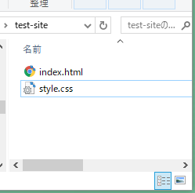
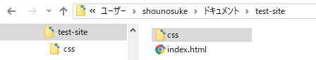

ファイルパス - HTML
category: HTML
ファイルパスの書き方と種類を解説します。
画像や動画をページに挿入したり。ページの遷移をするアンカータグに必要な知識です。
パス（ファイルパス）とは
単にパスとも現場ではいわれていますが。パスとは日本語で訳すと「通す」という意味で、リクエストを通すとか関連づけるとか紐付けるとなどといいかえられます。ファイルやデータ間の関連性を明示するための技術です。
URI
URI（Uniform Resource Identifier）形式とは ファイルとフォルダーの保管場所を表す方式でコンピューター技術で一般的に使われる。ファイル位置の表記方法です。パソコンの中の住所表記方法とでもおもっておいてください。
URI 【 Uniform Resource Identifier 】
リソース
リソースとは資源という意味です。Webサイト制作ではページを構成するのに必要な画像データやファイル プログラムなどHTMLファイルがリクエストするデータやファイルのことを総称して呼びます。
ファイルパスの表記方法
ファイルの位置を示す方式(URI方式)には以下の書き方があります。
- 1.絶対パス
- 2.相対パス
- 3.ルートからの相対パス
1. 絶対パス。
URL（Uniform Resource Locator）で指定します。（ブラウザのアドレスバーに表記される文字列） 絶対パスはドメインからのファイルの位置を指定する記述です。絶対パスで同じファイルを指定する場合は 理論上常に同じです。
例えばGitの公開リポジトリアドレス。
ex) https://github.com/sozo-taru-Studio
https://github.com | サイトのドメイン |
|---|---|
/ | セパレーター [所属のとか、からの] 日本語の助詞にあたるもの |
sozo-taru-Studio | （リポジトリ）フォルダー名 |
ドメイン
インターネットはIPアドレスでインターネット上の位置を判別しています。サーバーの位置もIPアドレスで判断できます。
IPアドレスは機械的には便利なのですが人が扱うのには不便です。
IPアドレスは数字の羅列でユニークさを識別しています。
サーバーの引っ越しなどをしたときIPアドレスだけでの判別をしていた場合
そのサイトを愛用していた人たちはIPアドレスのブックマークしなおしをする手間をかけます。
ドメインの役割はIPアドレスとユニークな文字列を紐付けしてくれるサービスでドメインを管理する会社が登録してくれます。
IPアドレスをドメインに変換してもらうことで同じドメイン名で同じ場所にユーザーが遷移できるよになります。
ドメインをもっと詳しくしりたいかたはドメイン管理会社のページなどを読んでみてください。
絶対パスのマナ-
絶対パスがわかればせ世界中のリソースをインターネットからコピーできます。（もちろんブロックもできますがサーバーの設定をこまかくいじらないといけません。）
ですので自分で取った写真や動画が他人に使われる。または使うことは簡単にできます。
許可されたリソースでも直接リンクを張らない。
動画や写真音源は例えパブリックドメイン（利用可）でも直接公開サーバーからアクセスするのではなく自分のプロジェクトフォルダーで管理してパス書きます。 リソース源が削除された場合消える事故もなくなります。
絶対パスを使う場面
- 他サイトへのアンカーリンク。
- CDNや共有サイトをつかうとき。
CDNCDN
2. 相対パス
相対パスはリクエストするファイルを基準に記述します。
つまり記述するファイルが違う場合同じ画像ファイルでも書き方がかわります。
相対パスの書き方を理解できないと今後の学習の進展しないのでしっかり覚えましょう。
フォルダ構成を理解する。
例1 同じフォルダー内

ファイルの構成図
├ test─site
│ index.html
│ style.css
index.htmlにstyle.cssを読み込むとき。
フォルダの中に並列で存在する場合はそのファイル名を記述するだけで指定できます。
<link href="style.css" rel="stylesheet" >
例2 深いフォルダーへの相対パス。

フォルダ図
├ test─site
│ index.html
├ css
| style.css
相対パスを記述するファイルが基準になります。
深いフォルダーにリンクしたいファイルがある場合は
まずそのファイルの所属するフォルダー名を指定します。
セパレーターとなる/スラッシュを記述し。お目当てのファイル名を記述します。
index.htmlにstyle.cssを読み込むとき。
<link href="css/style.css" rel="stylesheet" >
フォルダとファイルの名前の区切りは/です。
例3 記述ファイルの上の層フォルダーを指定する場合。
フォルダもファイルも１つのフォルダに所属しているルールなので。上の層を指定する場合は..ピリオド２つを記述します。
セパレーターをいれて上の層のファイルやフォルダーを指定します。
../ :一回層上のフォルダを指定
../../２階層上のフォルダを指定する。
相対パスはローカルPCで作成中のwebサイトでリソースをリンクするのに便利ですが、一度決まったフォルダ名やリンク先のファイルが移動したりするとリンク切れを起こす可能性があります。サーバーに上げずにモックアップを作る場合便利です。
フォルダ図
├ images
| img01.jpg
├ test─site
│ index.html
index.htmlに画像の「img01.jpg」を読み込むとき。
<img src="../images/img01.jpg" alt="" >ルートからの絶対パス。
ルート（元祖）とはレンタルサーバーの公開フォルダーのことです。
この書き方メリット
ドメインが確定していない場合やローカルサーバーでの制作の場合につかわれます。 フォルダの移動してパスがとおらなくなっるくとを防ぎます。 コードのスニペット化（使いまわし）にも便利なパスの書き方です。 例えばスポンサーバナーを多数のページに複数表示するとき。相対パスだとページごとにパスを書き変える必要がありますがこの方法だとバナーへのパスを含めたコードをコピペするだけで表示できます。
サーバー側の設定で「/」のみをルートフォルダーと解釈するように設定されています。
例えばhttp://example.comの最初のページをリクエストする場合、どの階層からのページでも「/」で遷移できます。
つまり 「/」 = 「http://example.com」です。
「<a href="/">トップページへ</a>」 こんな感じのことができます。
使用例
<link href="/css/style.css" rel="stylesheet"> スタイルシートがリンクできます。
windowsやOSXのローカル領域での検証ではリンクが切れます。
昨今の制作案件ではドメインがまだきまっていなかったり、開発用の閉鎖されたサーバーでの制作をすることからよく使われます。